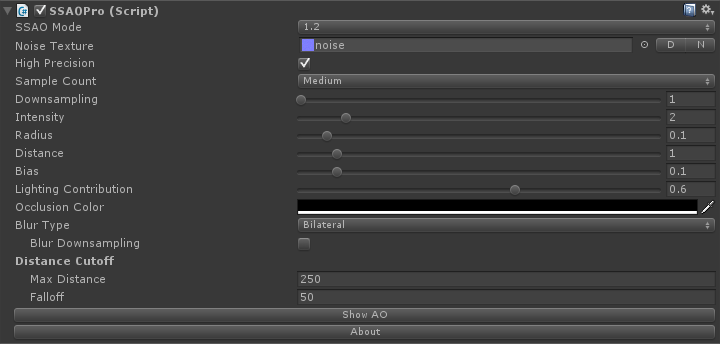
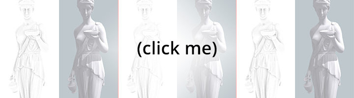

Screen-space ambient occlusion (SSAO) approximates ambient occlusion in realtime. It relies on the depth and normals buffers to darkens creases, holes and surfaces that are close to each other. In real life, such areas tend to block out or occlude ambient light, hence they appear darker.
SSAO Pro offers a clean, stable and relatively fast version of SSAO for Unity with added features like lighting contribution, occlusion color or distance cutoff with smooth falloff.
SSAO Pro requires Unity Pro 4.3+ and works on desktop platforms (DirectX 9, DirectX 11, OpenGL). Although it could potentially work with OpenGL ES 2.0 and 3.0, I wouldn't recommend using this on mobile devices. It's a high-end effect, the performance cost would be too expensive for these platforms to handle at a smooth framerate. Even though the shader used in this asset is quite optimized, SSAO in itself still is an expensive effect and requires a powerful computer to run at very high settings.
It makes use of Shader Model 3.0 : NVIDIA cards since 2004 (GeForce 6), AMD cards since 2005 (Radeon X1300), Intel cards since 2006 (GMA X3000).
To add SSAO Pro to your scene select your camera and go to Component -> Image Effects -> SSAO Pro or drag the SSAOPro component from /SSAOPro/Scripts/ onto your camera.
Since version 1.2, SSAO Pro comes with two algorithms :
The Noise Texture is used to jitter the AO samples. If you choose to keep this field empty the effect will be slightly faster. Using a noise texture is generally recommended to avoid banding in the SSAO pass. The D button will populate the field using the default noise texture, whereas N will set it to none. If you want to make your own texture, only the red and green channels are used by the shader to get a 2D vector.
If High Precision is checked, SSAO Pro will generate a custom depth map instead of using the default one from Unity. It will result in a higher quality SSAO pass in the distance especially with the forward rendering path.
Leave the High Precision unchecked in Unity 5, it's not needed anymore !
The Downsampling setting lets you change resolution at which calculations should be performed (for example, a downsampling value of 2 will work at half the screen resolution). Using downsampling increases rendering speed at the cost of quality.
Next is the Sample Count, or the number of ambient occlusion samples for each pixel on screen. More samples means slower but smoother rendering. Five presets are available :
The Intensity is the occlusion multiplier (degree of darkness added by ambient occlusion). Push this up or down to get a more or less visible effect.
The sampling Radius is the maximum radius of a gap (in world units) that will introduce ambient occlusion.
Distance represents the distance between an occluded sample and its occluder.
The Bias is added to the occlusion cone. If you're getting artifacts you may want to push this up while playing with the Distance parameter.
Lighting Contribution defines how much ambient occlusion should be added in bright areas. Currently, it uses the pixel luminosity computed using the common formula : dot(color, float3(0.299, 0.587, 0.114)). By pushing this up, bright areas will have less ambient occlusion which generally leads to more realistic results.
If for some reason you don't want the ambient occlusion to be black, use the Occlusion Color parameter.
The effect comes with three Blur Types :
If Blur Downsampling is enabled, the blur pass will be applied to the downsampled render before it gets resized to fit the screen. Else, it will be applied after the resize, which increases quality but is a bit slower.
Distance Cutoff is used to stop applying ambient occlusion for distant objects. Max Distance and Falloff are in world unit. You will want the Max Distance to be lower than your far clipping plane. The Falloff is used to ease out the cutoff, i.e. set it to 0 and the SSAO will stop abruptly at Max Distance; set it to 50 and the SSAO will smoothly disappear starting at (Max Distance) - (Falloff). It's generally a good idea to stop applying AO after 150-250 units to avoid flickering in the distance.
Finally, you can use the Show AO button to only show the SSAO pass to help you debug or fine tune your settings.
SSAO is known to be an expensive effect but can add a lot of depth and details to your scene. Internally, SSAO Pro makes use of an Unity feature called "über shader". The main shader has a bunch of carefully tuned variants, so depending on what your parameters are it will automatically select the most adapted shader variant for the job.
The following parameters affect which variant will be chosen :
The most important settings regarding performances are Downsampling, Sample Count, Blur Type and Blur Downsampling. Downsampling values greater than 1 will increase rendering speed tremendously at the cost of quality. Below is a quick speed comparison between several presets (using 1.1 mode, 1.2 roughly gives the same results) :
| Samples | Downsampling/Blur | Blur | Speed |
| Low | 1 / No | None | 0.498ms |
| Med | 1 / No | None | 0.652ms |
| High | 1 / No | None | 0.845ms |
| Low | 1 / No | Bilateral | 0.720ms |
| Med | 1 / No | Bilateral | 0.875ms |
| High | 1 / No | Bilateral | 1.066ms |
| Low | 2 / No | None | 0.198ms |
| Med | 2 / No | None | 0.235ms |
| High | 2 / No | None | 0.286ms |
| Low | 2 / Yes | Bilateral | 0.321ms |
| Med | 2 / Yes | Bilateral | 0.360ms |
| High | 2 / Yes | Bilateral | 0.412ms |
| Low | 2 / No | Bilateral | 0.622ms |
| Med | 2 / No | Bilateral | 0.778ms |
| High | 2 / No | Bilateral | 0.964ms |
Please note that these numbers will vary from computer to computer depending on their specs and the scene, but they can be used as a good reference table.
If you're looking for a visual comparison of these settings, check out the following picture (2100x4750 px) :
As you can see, performances can vary a lot. Depending on your art style you may not need blurring at all. If you're going for a realistic look with high detail textures, using a Medium sample count without blur will probably work great. For a cartoony or texture-less look you'll need a smoother SSAO, so instead of pushing the sample count up, you could go for a Low preset and add some Bilateral blur, which will have roughly the same performance cost as High without blur but will look better. Downsampling can help you get a nice performance boost as well.
It really depends on your setup, scene scale and art style. Experimentation is the key !
The following is for 1.1 (Legacy) mode only :
This mode is very sensitive to the quality of the depth map. For this reason, it's highly recommended to work at proper scale (1 Unity unit = 1 meter) and keep the near and far view plane at reasonable distances. The near plane distance is quite important and should be as far as possible. Moving it from 0.1 to 0.3 or 0.4 actually helps precision a lot, even though the change is quite minimal. Also try to avoid setting the far plane to impossible values like 100000. Generally speaking, the default [0.3;1000] range is fine. If you don't need a range this large, reduce it as much as you can and enjoy the extra precision gain for the SSAO. Using a low precision depth map will lead to nasty SSAO banding and self-shadowing artifacts.
Regarding fog usage, SSAO doesn't play well with it. That's one of the reason why there's a Distance Cutoff parameter available, so you can work around this issue easily.
If you have any questions or feedback, you can contact me at :
Quick links :